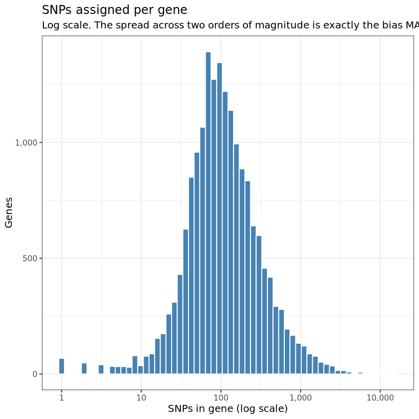
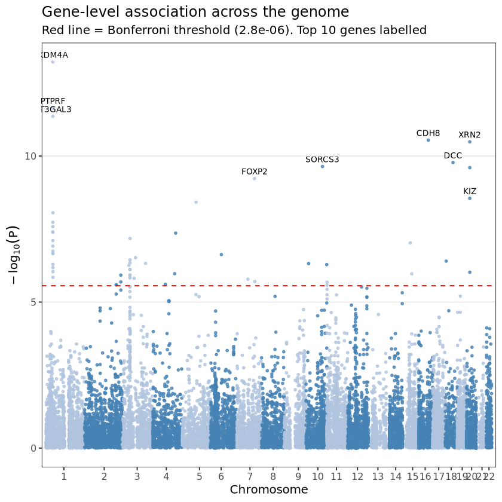
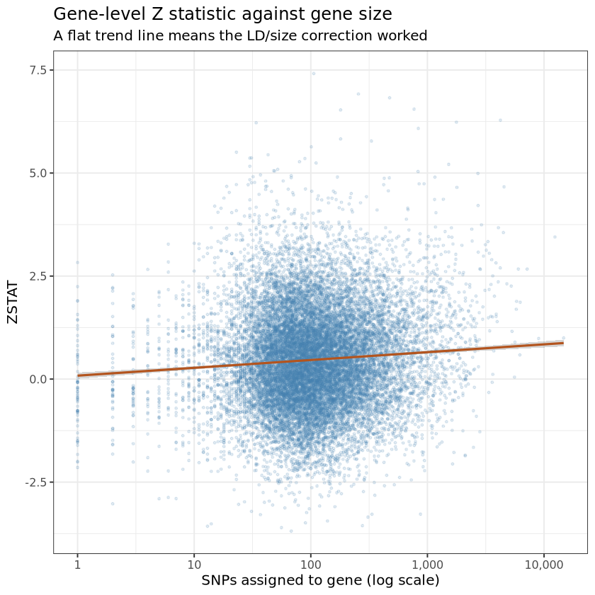
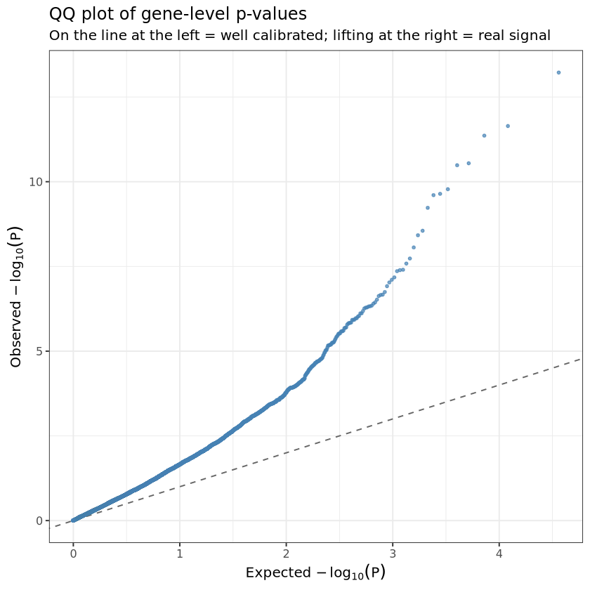
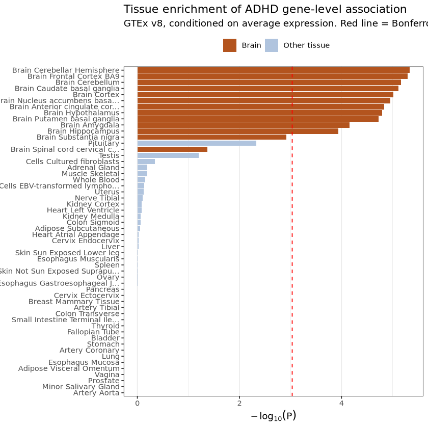

flowchart LR A["<b>Step 1 - Prepare</b><br>QC the summary statistics in R<br>snp_loc.txt + pval.txt"] B["<b>Step 2 - Annotate</b><br>Assign each SNP to a gene<br>.genes.annot"] C["<b>Step 3 - Gene analysis</b><br>One p-value per gene, LD-corrected<br>.genes.out + .genes.raw"] D["<b>Step 4 - Gene sets</b><br>Which tissues or pathways are enriched<br>.gsa.out"] A --> B --> C --> D
MAGMA: From Variants to Genes to Tissues
ImportantBefore You Start
This notebook starts from the raw ADHD summary statistics file and takes you all the way to tissue enrichment. You need
- the summary statistics:
ADHD2022_iPSYCH_deCODE_PGC.meta.gz - the three reference datasets in
reference_data/
Why Gene-Level Analysis?
Tip
A GWAS gives you a Manhattan plot and a list of lead SNPs. That list is hard to act on: the lead SNP is not always causitive one, it is significant only because of LD with something unknown, and thousands of genuinely causal variants sit just below 5 × 10⁻⁸ and are invisible. Gene-level analysis reframes the question from “which variant?” to “which gene?” and “which tissue?”, questions you can follow up in the lab.
Learning Objectives
After this session you will be able to:
- Explain what MAGMA aggregates
- Prepare MAGMA input files and choose the correct sample size for a case-control GWAS
- Run all three MAGMA steps
- Interpret
.genes.outand.gsa.out, applying the correct multiple-testing correction to each - Explain why tissue enrichment must be conditioned on average expression
- Recognise the main confounders: gene size, gene density
The workflow
MAGMA (Multi-marker Analysis of GenoMic Annotation, de Leeuw et al. 2015). We prepare its input first, then run them in order, each consuming the output of the one before.
What makes this statistically hard
The naive approach, taking the smallest p-value in each gene or averaging the p-values, fails due to: linkage disequilibrium.
NoteThe LD problem
A gene containing 300 SNPs does not contain 300 independent pieces of evidence. If those SNPs sit in two haplotype blocks, they carry roughly two independent signals repeated 150 times each.
Worse, this bias is systematic: large genes and genes in high-LD regions contain more SNPs, so they would appear more significant regardless of biology.
MAGMA solves this by computing the SNP-wise mean χ² statistic for the gene and then deriving its null distribution given the observed LD matrix, estimated from a reference panel of real genotypes. The resulting gene p-value is corrected for both the number of SNPs and their correlation.
Setup
Code
pacman::p_load(vroom, dplyr, ggplot2, scales)Every path used in this session, in one place. Change them here and nowhere else.
Code
GENE_LOC <- "reference_data/NCBI37.3/NCBI37.3.gene.loc"
LD_REF <- "reference_data/g1000_eur/g1000_eur"
GTEX <- "reference_data/gtex_v8_ts_avg_log2TPM.entrez.dedup.txt"
OUT_PREFIX <- "output/magma"
SUMSTATS <- "input/ADHD2022_iPSYCH_deCODE_PGC.meta.gz"
dir.create(OUT_PREFIX, showWarnings = FALSE, recursive = TRUE)Step 1: Prepare the MAGMA Input Files
MAGMA needs two small plain text files, which we build from the raw file.
- SNP location file:
SNP CHR BP. Where each variant sits. No p-values. - P-value file:
SNP P. The association evidence. No positions.
NoteWhy two files instead of one
The split mirrors the two MAGMA steps. Annotation (Step 2) is purely positional: it needs coordinates and knows nothing about association. Gene analysis (Step 3) needs association evidence but takes the positions from the annotation file produced in Step 2.
Load the summary statistics
Code
sumstats <- vroom(SUMSTATS, show_col_types = FALSE)
cat(sprintf("Loaded %s variants x %d columns from:\n %s\n",
format(nrow(sumstats), big.mark = ","), ncol(sumstats), SUMSTATS))Loaded 6,774,224 variants x 14 columns from:
input/ADHD2022_iPSYCH_deCODE_PGC.meta.gzCode
head(sumstats, 5)| CHR | SNP | BP | A1 | A2 | FRQ_A_38691 | FRQ_U_186843 | INFO | OR | SE | P | Direction | Nca | Nco |
|---|---|---|---|---|---|---|---|---|---|---|---|---|---|
| <dbl> | <chr> | <dbl> | <chr> | <chr> | <dbl> | <dbl> | <dbl> | <dbl> | <dbl> | <dbl> | <chr> | <dbl> | <dbl> |
| 8 | rs62513865 | 101592213 | C | T | 0.925 | 0.937 | 0.981 | 0.99631 | 0.0175 | 0.8325 | +---+++0-++-+ | 38691 | 186843 |
| 8 | rs79643588 | 106973048 | G | A | 0.910 | 0.917 | 1.000 | 1.00411 | 0.0159 | 0.7967 | ++--++-+-+-++ | 38691 | 186843 |
| 8 | rs17396518 | 108690829 | T | G | 0.561 | 0.577 | 0.998 | 0.99611 | 0.0096 | 0.6876 | --++-++??-+-- | 37367 | 184388 |
| 8 | rs983166 | 108681675 | A | C | 0.570 | 0.586 | 0.996 | 0.99491 | 0.0096 | 0.5956 | --++-++++-+-- | 38691 | 186843 |
| 8 | rs28842593 | 103044620 | T | C | 0.839 | 0.836 | 0.982 | 0.98314 | 0.0135 | 0.2081 | ----++0+??--+ | 37504 | 184525 |
Quality control
Everything that goes into MAGMA should pass the same QC.
NoteWhat we filter and why
INFO >= 0.8: keep well-imputed variants only.MAF >= 0.01: common variants only.Autosomes only (chr 1-22):
NCBI37.3.gene.loccontains no sex chromosomes.
The frequency column name embeds the case count (FRQ_A_38691), which changes from study to study, so we detect it rather than hard-code it.
Code
frq_case_col <- grep("^FRQ_A", names(sumstats), value = TRUE)
n_cases <- sumstats$Nca[1]
n_controls <- sumstats$Nco[1]
sumstats <- sumstats %>%
mutate(MAF = pmin(.data[[frq_case_col]], 1 - .data[[frq_case_col]]))
magma_input <- sumstats %>%
filter(INFO >= 0.8, MAF >= 0.01, CHR %in% 1:22)
tibble(
Step = c("Variants in file", "Fail INFO < 0.8", "Fail MAF < 0.01",
"Non-autosomal", "Passed to MAGMA"),
Variants = c(nrow(sumstats),
sum(sumstats$INFO < 0.8, na.rm = TRUE),
sum(sumstats$MAF < 0.01, na.rm = TRUE),
sum(!sumstats$CHR %in% 1:22),
nrow(magma_input))
) %>%
mutate(`% of file` = sprintf("%.1f%%", 100 * Variants / nrow(sumstats)),
Variants = format(Variants, big.mark = ","))| Step | Variants | % of file |
|---|---|---|
| <chr> | <chr> | <chr> |
| Variants in file | 6,774,224 | 100.0% |
| Fail INFO < 0.8 | 0 | 0.0% |
| Fail MAF < 0.01 | 99 | 0.0% |
| Non-autosomal | 0 | 0.0% |
| Passed to MAGMA | 6,774,125 | 100.0% |
Remove duplicate rsIDs
Meta-analysed files routinely contain repeated identifiers: multi-allelic sites, merged rsIDs. MAGMA will either fail or silently double-count them, so this check is not optional.
Code
n_dup <- sum(duplicated(magma_input$SNP))
cat(sprintf("Duplicated rsIDs: %s\n", format(n_dup, big.mark = ",")))
magma_input <- magma_input %>% distinct(SNP, .keep_all = TRUE)
cat(sprintf("Final variant set: %s\n", format(nrow(magma_input), big.mark = ",")))Duplicated rsIDs: 6
Final variant set: 6,774,119Write the two files
Code
# Here we are telling where to create the directory for twritign fiels
input_dir <- "output/magma"
# this command creats output directory and figures sub directory
dir.create(input_dir, showWarnings = FALSE, recursive = TRUE)Code
SNP_LOC <- "output/magma/snp_loc.txt"
PVAL <- "output/magma/pval.txt"
vroom_write(magma_input %>% select(SNP, CHR, BP), SNP_LOC,
delim = "\t", col_names = TRUE)
vroom_write(magma_input %>% select(SNP, P), PVAL,
delim = "\t", col_names = TRUE)
cat("── snp_loc.txt ──\n")
print(head(magma_input %>% select(SNP, CHR, BP), 4))
cat("\n── pval.txt ──\n")
print(head(magma_input %>% select(SNP, P), 4))── snp_loc.txt ── # A tibble: 4 × 3 SNP CHR BP <chr> <dbl> <dbl> 1 rs62513865 8 101592213 2 rs79643588 8 106973048 3 rs17396518 8 108690829 4 rs983166 8 108681675 ── pval.txt ── # A tibble: 4 × 2 SNP P <chr> <dbl> 1 rs62513865 0.832 2 rs79643588 0.797 3 rs17396518 0.688 4 rs983166 0.596
Choosing the sample size
MAGMA needs N to convert p-values into Z-statistics. For a balanced study this is just the number of individuals. For an unbalanced case-control study it is not: 38,691 cases and 186,843 controls carry far less information than 112,767 of each would.
The right quantity is the effective sample size:
\[N_{\text{eff}} = \frac{4}{\frac{1}{N_{\text{cases}}} + \frac{1}{N_{\text{controls}}}}\]
Code
n_total <- n_cases + n_controls
n_eff <- 4 / (1 / n_cases + 1 / n_controls)
cat(sprintf("Cases : %s\n", format(n_cases, big.mark = ",")))
cat(sprintf("Controls : %s\n", format(n_controls, big.mark = ",")))
cat(sprintf("Total N : %s\n", format(n_total, big.mark = ",")))
cat(sprintf("Effective N : %s\n", format(round(n_eff), big.mark = ",")))
cat(sprintf("Ratio : %.2f\n", n_eff / n_total))Cases : 38,691
Controls : 186,843
Total N : 225,534
Effective N : 128,214
Ratio : 0.57
TipRead the output
The effective sample size is roughly 57% of the nominal total. The extra controls beyond a 1:1 ratio add real but rapidly diminishing information, and N_eff is the number that reflects it.
Because N here is the same for every SNP, it rescales the gene statistics rather than reordering them, so the ranking of genes barely moves. It matters when you compare gene Z-statistics across studies, when you combine MAGMA output with other tools, and when you report the analysis. Use N_eff and say so.
If your summary statistics file has a per-SNP sample size column (many meta-analyses do; this one does not), use it instead. MAGMA takes it with ncol=N in place of N=, and it correctly handles variants that were present in only some contributing cohorts.
Code
N_MAGMA <- round(n_eff)The Reference Data
Three reference files do the real work in Steps 2-4. Look at each one before running anything, because most MAGMA failures are a mismatch between these files and your data.
1. Gene locations: where the genes are
Code
gene_loc <- read.table(GENE_LOC, header = FALSE, stringsAsFactors = FALSE,
col.names = c("GENE", "CHR", "START", "STOP", "STRAND", "SYMBOL"))
cat(sprintf("%s protein-coding genes, build NCBI37.3 (hg19)\n\n",
format(nrow(gene_loc), big.mark = ",")))
head(gene_loc, 6)19,427 protein-coding genes, build NCBI37.3 (hg19)
| GENE | CHR | START | STOP | STRAND | SYMBOL | |
|---|---|---|---|---|---|---|
| <int> | <chr> | <int> | <int> | <chr> | <chr> | |
| 1 | 79501 | 1 | 69091 | 70008 | + | OR4F5 |
| 2 | 100996442 | 1 | 142447 | 174392 | - | LOC100996442 |
| 3 | 729759 | 1 | 367659 | 368597 | + | OR4F29 |
| 4 | 81399 | 1 | 621096 | 622034 | - | OR4F16 |
| 5 | 148398 | 1 | 859993 | 879961 | + | SAMD11 |
| 6 | 26155 | 1 | 879583 | 894679 | - | NOC2L |
NoteTwo things to notice
Genes are identified by Entrez ID, not by symbol. MAGMA works entirely in Entrez IDs, so its output is unreadable until you join the symbol back on, which we do in Step 3. Every other file you bring to MAGMA (gene sets, expression matrices) must also be keyed on Entrez ID.
This is hg19, and it is protein-coding only. ~19,400 genes, not the ~60,000 in a full GENCODE annotation. Non-coding RNAs, pseudogenes and antisense transcripts are absent, so a signal falling in a lncRNA is simply assigned to a neighbouring protein-coding gene or to nothing at all. That is a real limitation of this reference, not of MAGMA.
3. Gene expression: the tissue covariate
Code
gtex_header <- strsplit(readLines(GTEX, n = 1), "\t")[[1]]
cat(sprintf("Genes : %s\n", format(length(readLines(GTEX)) - 1, big.mark = ",")))
cat(sprintf("Columns : %d (1 gene ID + %d tissues + 1 average)\n",
length(gtex_header), length(gtex_header) - 2))
cat(sprintf("Brain tissues among them: %d\n\n",
sum(grepl("^Brain", gtex_header))))
head(gtex_header, 14)
tail(gtex_header, 3)Genes : 23,961
Columns : 56 (1 gene ID + 54 tissues + 1 average)
Brain tissues among them: 13
- 'GENE'
- 'Adipose_Subcutaneous'
- 'Adipose_Visceral_Omentum'
- 'Adrenal_Gland'
- 'Artery_Aorta'
- 'Artery_Coronary'
- 'Artery_Tibial'
- 'Bladder'
- 'Brain_Amygdala'
- 'Brain_Anterior_cingulate_cortex_BA24'
- 'Brain_Caudate_basal_ganglia'
- 'Brain_Cerebellar_Hemisphere'
- 'Brain_Cerebellum'
- 'Brain_Cortex'
- 'Vagina'
- 'Whole_Blood'
- 'Average'
ImportantThe
Average column is the most important column in this file
It holds the mean expression of each gene across all 54 tissues, and it exists to solve a confound that would otherwise dominate the entire analysis.
Genes that are highly expressed everywhere, the housekeeping genes, are longer, more conserved, more constrained, and carry more GWAS signal for almost every trait. Test each tissue on its own and you will find that nearly all 54 tissues are “enriched”, because all of them are correlated with general expression level.
Conditioning on Average changes the question from “are genes expressed in this tissue associated with ADHD?” to “are genes expressed specifically in this tissue associated with ADHD, over and above general expression?” Only the second question is informative. We do this in Step 4.
Step 2: SNP → Gene Annotation
Assign every variant to a gene, by position.
Code
command <- ("magma \\
--annotate window=10,10 \\
--snp-loc output/magma/snp_loc.txt \\
--gene-loc reference_data/NCBI37.3/NCBI37.3.gene.loc \\
--out output/magma/adhd")
output <- system(command, intern = T)
cat(output, sep="\n")Welcome to MAGMA v1.10 (linux/s)
Using flags:
--annotate window=10,10
--snp-loc output/magma/snp_loc.txt
--gene-loc reference_data/NCBI37.3/NCBI37.3.gene.loc
--out output/magma/adhd
Start time is 16:10:33, Saturday 22 Aug 2026
Starting annotation...
Reading gene locations from file reference_data/NCBI37.3/NCBI37.3.gene.loc...
adding window: 10000bp
19427 gene locations read from file
chromosome 1: 2016 genes
chromosome 2: 1226 genes
chromosome 3: 1050 genes
chromosome 4: 745 genes
chromosome 5: 856 genes
chromosome 6: 1016 genes
chromosome 7: 906 genes
chromosome 8: 669 genes
chromosome 9: 775 genes
chromosome 10: 723 genes
chromosome 11: 1275 genes
chromosome 12: 1009 genes
chromosome 13: 320 genes
chromosome 14: 595 genes
chromosome 15: 586 genes
chromosome 16: 817 genes
chromosome 17: 1147 genes
chromosome 18: 271 genes
chromosome 19: 1389 genes
chromosome 20: 527 genes
chromosome 21: 215 genes
chromosome 22: 442 genes
chromosome X: 805 genes
chromosome Y: 47 genes
Reading SNP locations from file output/magma/snp_loc.txt...
WARNING: on line 1, chromosome code 'CHR' not recognised; skipping SNP (ID = SNP)
6774119 SNP locations read from file
of those, 3230552 (47.69%) mapped to at least one gene
Writing annotation to file output/magma/adhd.genes.annot
for chromosome 1, 85 genes are empty (out of 2016)
for chromosome 2, 18 genes are empty (out of 1226)
for chromosome 3, 2 genes are empty (out of 1050)
for chromosome 4, 22 genes are empty (out of 745)
for chromosome 5, 9 genes are empty (out of 856)
for chromosome 6, 2 genes are empty (out of 1016)
for chromosome 7, 21 genes are empty (out of 906)
for chromosome 8, 46 genes are empty (out of 669)
for chromosome 9, 40 genes are empty (out of 775)
for chromosome 10, 12 genes are empty (out of 723)
for chromosome 11, 7 genes are empty (out of 1275)
for chromosome 12, 4 genes are empty (out of 1009)
for chromosome 13, 1 gene is empty (out of 320)
for chromosome 14, 12 genes are empty (out of 595)
for chromosome 15, 29 genes are empty (out of 586)
for chromosome 16, 61 genes are empty (out of 817)
for chromosome 17, 26 genes are empty (out of 1147)
for chromosome 19, 30 genes are empty (out of 1389)
for chromosome 20, 3 genes are empty (out of 527)
for chromosome 21, 4 genes are empty (out of 215)
for chromosome 22, 21 genes are empty (out of 442)
for chromosome X, 805 genes are empty (out of 805)
for chromosome Y, 47 genes are empty (out of 47)
at least one SNP mapped to each of a total of 18120 genes (out of 19427)
End time is 16:10:43, Saturday 22 Aug 2026 (elapsed: 00:00:10)
Note
window=10,10: the one choice that matters here
The window extends the boundaries of each gene by 10 kb upstream and 10 kb before assigning SNPs.
window=0,0: only variants inside the gene body. Conservative, and it misses promoter and enhancer variants, which is where a large share of GWAS signal actually sits.window=10,10: the common default. Captures proximal regulatory variation without much overlap between neighbouring genes.window=35,10: 35 kb upstream, 10 kb downstream. Asymmetric because regulatory elements cluster upstream. Used in several published MAGMA analyses.
Bigger windows recover more regulatory signal but assign more SNPs to several genes at once, which blurs the attribution in gene-dense regions. There is no correct answer; there is a requirement to state which you used, and it is good practice to check that your headline result survives a different window (Exercise 2).
Inspect the annotation
Code
ANNOT <- paste0(OUT_PREFIX, "/adhd.genes.annot")Code
annot_lines <- readLines(ANNOT)
annot_lines <- annot_lines[!grepl("^#", annot_lines)] # drop header comments
# Each line: GENE CHR:START:STOP SNP1 SNP2 ...
parts <- strsplit(annot_lines, "\t")
annot <- data.frame(
GENE = vapply(parts, `[`, character(1), 1),
n_snps = vapply(parts, function(x) length(x) - 2L, integer(1)),
stringsAsFactors = FALSE
)
cat(sprintf("Genes with at least one SNP : %s\n", format(nrow(annot), big.mark = ",")))
cat(sprintf("Median SNPs per gene : %d\n", median(annot$n_snps)));
cat(sprintf("Largest gene (by SNP count) : %s SNPs\n",
format(max(annot$n_snps), big.mark = ",")))Genes with at least one SNP : 18,120
Median SNPs per gene : 100
Largest gene (by SNP count) : 15,004 SNPsCode
ggplot(annot, aes(x = n_snps)) +
geom_histogram(bins = 60, fill = "#4682B4", colour = "white") +
scale_x_log10(labels = label_comma()) +
scale_y_continuous(labels = label_comma()) +
labs(title = "SNPs assigned per gene",
subtitle = "Log scale. The spread across two orders of magnitude is exactly the bias MAGMA must correct",
x = "SNPs in gene (log scale)", y = "Genes") +
theme_bw(base_size = 12)
TipRead the output
Around 18,000 of the ~19,400 genes receive at least one SNP; the rest fall in regions with no QC-passing variants.
The histogram spans two orders of magnitude: some genes get a handful of SNPs, some get thousands. This is the whole reason Step 3 is statistically non-trivial. If gene p-values were computed by any method that rewards having more SNPs, this distribution would translate directly into a ranking of genes by size. Watch for it again in Step 3, where we check explicitly that it has not happened.
Step 3: Gene Analysis
Combine the SNP p-values within each gene into a single gene p-value, correcting for LD.
Code
#Takes some time
command <- "magma \\
--bfile reference_data/g1000_eur/g1000_eur \\
--gene-annot output/magma/adhd.genes.annot \\
--pval output/magma/pval.txt use=SNP,P N=128214 \\
--out output/magma/adhd"
output <- system(command, intern=T)
cat(output, sep="\n")
# Output: output/magma/adhd.genes.out (readable results, one row per gene)
# output/magma/adhd.genes.raw (full statistics + gene correlations,
# required as input to Step 4)Welcome to MAGMA v1.10 (linux/s)
Using flags:
--bfile reference_data/g1000_eur/g1000_eur
--gene-annot output/magma/adhd.genes.annot
--pval output/magma/pval.txt use=SNP,P N=128214
--out output/magma/adhd
Start time is 16:10:47, Saturday 22 Aug 2026
Loading PLINK-format data...
Reading file reference_data/g1000_eur/g1000_eur.fam... 503 individuals read
Reading file reference_data/g1000_eur/g1000_eur.bim... 22665064 SNPs read
Preparing file reference_data/g1000_eur/g1000_eur.bed...
Reading SNP synonyms from file reference_data/g1000_eur/g1000_eur.synonyms (auto-detected)
read 6016767 mapped synonyms from file, mapping to 3921040 SNPs in the data
WARNING: detected 133 synonymous SNP pairs in the data
skipped all synonym entries involved, synonymous SNPs are kept in analysis
writing list of detected synonyms in data to supplementary log file
Reading SNP p-values from file output/magma/pval.txt...
detected 2 variables in file
using variable: SNP (SNP id)
using variable: P (p-value)
read 6774120 lines from file, containing valid SNP p-values for 6723396 SNPs in data (99.25% of lines, 29.66% of SNPs in data)
Loading gene annotation from file output/magma/adhd.genes.annot...
18120 gene definitions read from file
found 18112 genes containing valid SNPs in genotype data
Starting gene analysis...
using model: SNPwise-mean
writing gene analysis results to file output/magma/adhd.genes.out
writing intermediate output to file output/magma/adhd.genes.raw
End time is 16:17:39, Saturday 22 Aug 2026 (elapsed: 00:06:52)
NoteThe arguments, one by one
| Argument | What it does |
|---|---|
--bfile |
PLINK-format LD reference. MAGMA reads genotypes here purely to compute SNP-SNP correlations |
--gene-annot |
The SNP-to-gene map from Step 2 |
--pval ... use=SNP,P |
The p-value file, naming which columns hold the identifier and the p-value |
N=128214 |
Effective sample size from Step 1. Use ncol=N instead if you have a per-SNP N column |
--out |
Output prefix. Both .genes.out and .genes.raw are written |
.genes.raw looks like an intermediate file but is not disposable: it carries the gene-gene correlations that Step 4 needs to run a valid competitive test. Do not delete it.
Read the results
Code
GENES_OUT <- paste0(OUT_PREFIX, "/adhd.genes.out")Code
genes <- read.table(GENES_OUT, header = TRUE, stringsAsFactors = FALSE) %>%
# MAGMA reports Entrez IDs; join the symbols back on so results are readable
left_join(gene_loc %>% select(GENE, SYMBOL), by = "GENE") %>%
mutate(GENE = as.character(GENE))
BONF <- 0.05 / nrow(genes)
cat(sprintf("Genes tested : %s\n", format(nrow(genes), big.mark = ",")))
cat(sprintf("Bonferroni threshold (0.05/N) : %.3g\n", BONF))
cat(sprintf("Genome-wide significant genes : %d\n", sum(genes$P < BONF)))
head(genes, 5)Genes tested : 18,112
Bonferroni threshold (0.05/N) : 2.76e-06
Genome-wide significant genes : 56| GENE | CHR | START | STOP | NSNPS | NPARAM | N | ZSTAT | P | SYMBOL | |
|---|---|---|---|---|---|---|---|---|---|---|
| <chr> | <int> | <int> | <int> | <int> | <int> | <int> | <dbl> | <dbl> | <chr> | |
| 1 | 84069 | 1 | 891872 | 920488 | 7 | 1 | 128214 | 0.65538 | 0.25611 | PLEKHN1 |
| 2 | 84808 | 1 | 900579 | 927473 | 20 | 3 | 128214 | 1.22680 | 0.10994 | PERM1 |
| 3 | 57801 | 1 | 924342 | 946608 | 29 | 3 | 128214 | 0.87823 | 0.18991 | HES4 |
| 4 | 9636 | 1 | 938847 | 959920 | 15 | 1 | 128214 | 0.47696 | 0.31669 | ISG15 |
| 5 | 375790 | 1 | 945503 | 1001499 | 7 | 1 | 128214 | 0.63903 | 0.26140 | AGRN |
NoteThe columns of
.genes.out
| Column | Meaning |
|---|---|
GENE |
Entrez gene ID |
CHR, START, STOP |
Gene location (hg19) |
NSNPS |
Number of SNPs assigned to the gene |
NPARAM |
Effective number of independent SNPs after accounting for LD. Compare it to NSNPS; the gap is the LD correction made visible |
N |
Sample size used |
ZSTAT |
Gene-level Z statistic. Higher = stronger association. Always positive: a gene has no direction of effect |
P |
Gene-level p-value |
The gene-level threshold is Bonferroni across the genes tested, about 0.05 / 18,000 ≈ 2.7 × 10⁻⁶. It is not 5 × 10⁻⁸: that threshold is calibrated for a million independent SNP tests, and using it here would be absurdly conservative.
Top genes
Code
genes %>%
arrange(P) %>%
head(25) %>%
transmute(SYMBOL,
GENE, CHR,
NSNPS,
NPARAM = round(NPARAM, 1),
ZSTAT = round(ZSTAT, 2),
P = signif(P, 3),
Significant = ifelse(P < BONF, "yes", "no"))| SYMBOL | GENE | CHR | NSNPS | NPARAM | ZSTAT | P | Significant | |
|---|---|---|---|---|---|---|---|---|
| <chr> | <chr> | <int> | <int> | <dbl> | <dbl> | <dbl> | <chr> | |
| 1 | KDM4A | 9682 | 1 | 106 | 11 | 7.42 | 6.01e-14 | yes |
| 2 | PTPRF | 5792 | 1 | 256 | 12 | 6.92 | 2.27e-12 | yes |
| 3 | ST3GAL3 | 6487 | 1 | 474 | 23 | 6.83 | 4.37e-12 | yes |
| 4 | CDH8 | 1006 | 16 | 768 | 44 | 6.55 | 2.86e-11 | yes |
| 5 | XRN2 | 22803 | 20 | 180 | 14 | 6.53 | 3.27e-11 | yes |
| 6 | DCC | 1630 | 18 | 4225 | 106 | 6.28 | 1.67e-10 | yes |
| 7 | SORCS3 | 22986 | 10 | 1773 | 47 | 6.23 | 2.28e-10 | yes |
| 8 | NKX2-4 | 644524 | 20 | 34 | 8 | 6.22 | 2.49e-10 | yes |
| 9 | FOXP2 | 93986 | 7 | 835 | 42 | 6.08 | 5.89e-10 | yes |
| 10 | KIZ | 55857 | 20 | 180 | 8 | 5.83 | 2.80e-09 | yes |
| 11 | MEF2C | 4208 | 5 | 331 | 25 | 5.78 | 3.80e-09 | yes |
| 12 | SLC6A9 | 6536 | 1 | 101 | 21 | 5.64 | 8.70e-09 | yes |
| 13 | CDC20 | 991 | 1 | 23 | 6 | 5.50 | 1.85e-08 | yes |
| 14 | MED8 | 112950 | 1 | 43 | 7 | 5.44 | 2.61e-08 | yes |
| 15 | MPL | 4352 | 1 | 31 | 5 | 5.37 | 3.96e-08 | yes |
| 16 | ELOVL1 | 64834 | 1 | 30 | 6 | 5.36 | 4.06e-08 | yes |
| 17 | LSM6 | 11157 | 4 | 89 | 6 | 5.35 | 4.37e-08 | yes |
| 18 | SEMA3F | 6405 | 3 | 80 | 9 | 5.27 | 6.65e-08 | yes |
| 19 | SZT2 | 23334 | 1 | 111 | 9 | 5.24 | 7.84e-08 | yes |
| 20 | SEMA6D | 80031 | 15 | 1521 | 55 | 5.21 | 9.39e-08 | yes |
| 21 | HYI | 81888 | 1 | 30 | 5 | 5.16 | 1.21e-07 | yes |
| 22 | ARTN | 9048 | 1 | 52 | 6 | 5.09 | 1.80e-07 | yes |
| 23 | TIE1 | 7075 | 1 | 48 | 5 | 5.06 | 2.15e-07 | yes |
| 24 | B4GALT2 | 8704 | 1 | 49 | 9 | 5.05 | 2.19e-07 | yes |
| 25 | COL19A1 | 1310 | 6 | 831 | 56 | 5.04 | 2.36e-07 | yes |
Gene-level Manhattan plot
Code
# Build a continuous genome-wide x axis by stacking chromosomes end to end
chr_offsets <- genes %>%
group_by(CHR) %>%
summarise(chr_len = max(STOP), .groups = "drop") %>%
arrange(CHR) %>%
mutate(offset = cumsum(as.numeric(chr_len)) - as.numeric(chr_len))
plot_dat <- genes %>%
left_join(chr_offsets, by = "CHR") %>%
mutate(pos_cum = (START + STOP) / 2 + offset,
logp = -log10(P))
axis_dat <- plot_dat %>%
group_by(CHR) %>%
summarise(centre = mean(pos_cum), .groups = "drop")
top_labels <- plot_dat %>% arrange(P) %>% head(10)
ggplot(plot_dat, aes(x = pos_cum, y = logp, colour = factor(CHR %% 2))) +
geom_point(size = 0.9, alpha = 0.8) +
geom_hline(yintercept = -log10(BONF), colour = "red", linetype = "dashed") +
geom_text(data = top_labels, aes(label = SYMBOL),
vjust = -0.7, size = 2.9, colour = "black", check_overlap = TRUE) +
scale_colour_manual(values = c("#4682B4", "#B0C4DE"), guide = "none") +
scale_x_continuous(breaks = axis_dat$centre, labels = axis_dat$CHR,
expand = expansion(mult = 0.01)) +
labs(title = "Gene-level association across the genome",
subtitle = sprintf("Red line = Bonferroni threshold (%.2g). Top 10 genes labelled", BONF),
x = "Chromosome", y = expression(-log[10](P))) +
theme_bw(base_size = 12) +
theme(panel.grid.minor = element_blank(),
panel.grid.major.x = element_blank())
TipRead the output
Compare this with a standard SNP-level Manhattan plot of the same GWAS. Two differences matter:
- The peaks are narrower. Each locus is now a handful of genes rather than a tower of hundreds of correlated SNPs. That is the aggregation doing its job.
- There are signals here that were not significant at SNP level. A gene where many variants each reach P ≈ 10⁻⁴ can clear the gene-level threshold even though no single variant came close to 5 × 10⁻⁸. Recovering that sub-threshold, distributed signal is the main reason to run MAGMA at all.
Did MAGMA actually control for gene size?
This is the check to run every time, and the one most often skipped.
Code
ggplot(genes, aes(x = NSNPS, y = ZSTAT)) +
geom_point(alpha = 0.15, size = 0.7, colour = "#4682B4") +
geom_smooth(method = "gam", colour = "#B3541E", se = TRUE, linewidth = 0.9) +
scale_x_log10(labels = label_comma()) +
labs(title = "Gene-level Z statistic against gene size",
subtitle = "A flat trend line means the LD/size correction worked",
x = "SNPs assigned to gene (log scale)", y = "ZSTAT") +
theme_bw(base_size = 12)The `method` was set to "gam", but mgcv is not installed. ! Falling back to `method = "lm"`. ℹ Install mgcv or change the `method` argument to resolve this issue. `geom_smooth()` using formula = 'y ~ x'

TipRead the output
The trend line should be close to flat. If bigger genes systematically had higher Z statistics, your top genes would be a list of the longest genes in the genome, and the tissue analysis in Step 4 would inherit that bias.
A mild residual upward slope is normal and expected: larger genes really do have more opportunity to contain causal variation, and MAGMA corrects for the statistical inflation from testing more correlated SNPs, not for that genuine biological effect.
Gene-level QQ plot
Code
obs <- -log10(sort(genes$P))
exp <- -log10(ppoints(length(obs)))
ggplot(data.frame(exp, obs), aes(x = exp, y = obs)) +
geom_abline(slope = 1, intercept = 0, colour = "grey40", linetype = "dashed") +
geom_point(size = 0.9, colour = "#4682B4", alpha = 0.7) +
labs(title = "QQ plot of gene-level p-values",
subtitle = "On the line at the left = well calibrated; lifting at the right = real signal",
x = expression(Expected~-log[10](P)),
y = expression(Observed~-log[10](P))) +
theme_bw(base_size = 12)
TipRead the output
Read it like any QQ plot, but remember that this one is diagnosing MAGMA, not the GWAS. The left-hand portion sitting on the diagonal is the evidence that the LD correction is calibrated. If the bulk of genes lifted off the line immediately, the LD reference is wrong, most often an ancestry mismatch, or a .synonyms file that failed to load so that most SNPs went unmatched.
Step 4: Tissue Enrichment
Gene p-values in hand, the question becomes: do genes specifically expressed in a particular tissue carry more ADHD signal than genes in general?
Code
command <- "magma \\
--gene-results output/magma/adhd.genes.raw \\
--gene-covar reference_data/gtex_v8_ts_avg_log2TPM.entrez.dedup.txt \\
--model condition-hide=Average direction=greater \\
--out output/magma/adhd_tissue"
output <- system(command, intern=T)
cat(output, sep="\n")
# Output: output/magma/adhd_tissue.gsa.outWelcome to MAGMA v1.10 (linux/s)
Using flags:
--gene-results output/magma/adhd.genes.raw
--gene-covar reference_data/gtex_v8_ts_avg_log2TPM.entrez.dedup.txt
--model condition-hide=Average direction=greater
--out output/magma/adhd_tissue
Start time is 16:18:49, Saturday 22 Aug 2026
Reading file output/magma/adhd.genes.raw...
18112 genes read from file
Loading gene-level covariates...
Reading file reference_data/gtex_v8_ts_avg_log2TPM.entrez.dedup.txt...
detected 55 variables in file (using all)
found 55 valid gene covariates, for 16966 genes defined in genotype data
Processing missing values...
found 1146 genes not present in all input files: removing these from analysis
16966 genes remaining in analysis
Preparing variables for analysis...
truncating Z-scores 3 points below zero or 6 standard deviations above the mean
truncating covariate values more than 5 standard deviations from the mean
total variables available for analysis: 55 gene covariates
Parsing model specifications...
Inverting gene-gene correlation matrix...
Performing regression analysis...
testing direction: one-sided, positive (sets), one-sided, positive (covar)
conditioning on internal variables:
gene size, log(gene size)
gene density, log(gene density)
inverse mac, log(inverse mac)
conditioning on input variables (no output):
Average (covar)
analysing individual variables
analysing single-variable models (number of models: 54)
writing results to file output/magma/adhd_tissue.gsa.out
End time is 16:18:57, Saturday 22 Aug 2026 (elapsed: 00:00:08)
Important
--model condition-hide=Average direction=greater
This is the most important line in the session, and the difference between a result and an artefact.
condition-hide=Average conditions every tissue test on the average expression across all tissues, and hides that covariate from the output. Without it you are asking “are expressed genes associated with ADHD?”, to which the answer is yes for nearly every tissue, and the result is uninterpretable. With it you are asking “is expression specific to this tissue associated with ADHD?”.
direction=greater makes the test one-sided. The hypothesis is that higher expression in the relevant tissue goes with stronger association. A two-sided test would also flag tissues where the relationship runs backwards, which has no sensible interpretation here and wastes half your significance budget.
Run it once without these options and compare (Exercise 1). The difference is dramatic, and it is the reason a lot of published tissue-enrichment results are weaker than they look.
Read the tissue results
Code
GSA_OUT <- paste0(OUT_PREFIX, "/adhd_tissue.gsa.out")Code
gsa <- read.table(GSA_OUT, header = TRUE, comment.char = "#",
stringsAsFactors = FALSE)
BONF_TISSUE <- 0.05 / nrow(gsa)
cat(sprintf("Tissues tested : %d\n", nrow(gsa)))
cat(sprintf("Bonferroni threshold : %.4g\n", BONF_TISSUE))
cat(sprintf("Significant tissues : %d\n", sum(gsa$P < BONF_TISSUE)))
gsa %>%
arrange(P) %>%
head(15) %>%
transmute(Tissue = VARIABLE,
NGENES,
BETA = round(BETA, 4),
BETA_STD = round(BETA_STD, 4),
SE = round(SE, 4),
P = signif(P, 3),
Significant = ifelse(P < BONF_TISSUE, "yes", "no"))Tissues tested : 54
Bonferroni threshold : 0.0009259
Significant tissues : 11| Tissue | NGENES | BETA | BETA_STD | SE | P | Significant | |
|---|---|---|---|---|---|---|---|
| <chr> | <int> | <dbl> | <dbl> | <dbl> | <dbl> | <chr> | |
| 1 | Brain_Cerebellar_Hemisphere | 16966 | 0.0303 | 0.0607 | 0.0068 | 4.61e-06 | yes |
| 2 | Brain_Frontal_Cortex_BA9 | 16966 | 0.0340 | 0.0624 | 0.0077 | 5.11e-06 | yes |
| 3 | Brain_Cerebellum | 16966 | 0.0307 | 0.0608 | 0.0071 | 6.78e-06 | yes |
| 4 | Brain_Caudate_basal_ganglia | 16966 | 0.0382 | 0.0658 | 0.0088 | 7.65e-06 | yes |
| 5 | Brain_Cortex | 16966 | 0.0342 | 0.0621 | 0.0080 | 9.55e-06 | yes |
| 6 | Brain_Nucleus_accumbens_basa... | 16966 | 0.0362 | 0.0626 | 0.0085 | 1.11e-05 | yes |
| 7 | Brain_Anterior_cingulate_cor... | 16966 | 0.0339 | 0.0596 | 0.0081 | 1.47e-05 | yes |
| 8 | Brain_Hypothalamus | 16966 | 0.0377 | 0.0646 | 0.0091 | 1.61e-05 | yes |
| 9 | Brain_Putamen_basal_ganglia | 16966 | 0.0370 | 0.0628 | 0.0090 | 1.88e-05 | yes |
| 10 | Brain_Amygdala | 16966 | 0.0338 | 0.0574 | 0.0089 | 7.01e-05 | yes |
| 11 | Brain_Hippocampus | 16966 | 0.0333 | 0.0562 | 0.0090 | 1.15e-04 | yes |
| 12 | Brain_Substantia_nigra | 16966 | 0.0296 | 0.0507 | 0.0097 | 1.20e-03 | no |
| 13 | Pituitary | 16966 | 0.0261 | 0.0483 | 0.0100 | 4.68e-03 | no |
| 14 | Brain_Spinal_cord_cervical_c... | 16966 | 0.0168 | 0.0301 | 0.0097 | 4.22e-02 | no |
| 15 | Testis | 16966 | 0.0097 | 0.0167 | 0.0063 | 6.22e-02 | no |
Code
gsa_plot <- gsa %>%
mutate(logp = -log10(P),
tissue = gsub("_", " ", VARIABLE),
group = ifelse(grepl("^Brain", VARIABLE), "Brain", "Other tissue"))
ggplot(gsa_plot, aes(x = reorder(tissue, logp), y = logp, fill = group)) +
geom_col() +
geom_hline(yintercept = -log10(BONF_TISSUE),
colour = "red", linetype = "dashed") +
coord_flip() +
scale_fill_manual(values = c("Brain" = "#B3541E", "Other tissue" = "#B0C4DE"),
name = NULL) +
labs(title = "Tissue enrichment of ADHD gene-level association",
subtitle = sprintf("GTEx v8, conditioned on average expression. Red line = Bonferroni (%.2g)",
BONF_TISSUE),
x = NULL, y = expression(-log[10](P))) +
theme_bw(base_size = 11) +
theme(legend.position = "top",
panel.grid.major.y = element_blank())
TipRead the output
Brain tissues (orange) should dominate the top of the ranking, with several clearing the Bonferroni line. This is simultaneously a sanity check, since a neurodevelopmental disorder had better implicate brain, and a result: it shows the common-variant signal for ADHD acts through genes with brain-specific expression, and it points at which brain regions to prioritise.
Three cautions when reading this plot:
- The 54 tissues are far from independent. The thirteen brain regions are strongly correlated with one another, so Bonferroni is conservative and the ordering within the brain regions is not reliable. Do not claim that cerebellum beats cortex because it sits one bar higher.
BETAmatters, not justP.BETAis the association between expression and gene-level signal;BETA_STDputs it on a standardised scale so tissues are comparable. A tiny p-value with a negligible beta is a large-sample artefact.- Testis and whole blood often rank high in GTEx analyses of any trait. Testis expresses an unusually large share of the genome, and whole blood has its own expression idiosyncrasies. Treat them with more scepticism than a result that matches a known biology.
Step 5 (Extension): Curated Gene Sets
Tissue expression is a continuous covariate. MAGMA also runs the classic discrete gene-set test: given a list of genes belonging to a pathway, are those genes more associated than the rest of the genome?
Code
# Download an Entrez-ID gene set collection from MSigDB, e.g. GO Biological
# Process: c5.go.bp.v2023.2.Hs.entrez.gmt
#
# GMT format is: SET_NAME <tab> description <tab> gene1 <tab> gene2 ...
# MAGMA expects the set name followed directly by gene IDs, so drop column 2:
system("cut -f1,3- input/c5.go.bp.v2023.2.Hs.entrez.gmt > output/magma/gobp.magma.txt")
command <- "magma \\
--gene-results output/magma/adhd.genes.raw \\
--set-annot output/magma/gobp.magma.txt \\
--out output/magma/adhd_gobp"
output <- system(command, intern=T)
cat(output, sep="\n")
# Output: output/magma/adhd_gobp.gsa.outWelcome to MAGMA v1.10 (linux/s)
Using flags:
--gene-results output/magma/adhd.genes.raw
--set-annot output/magma/gobp.magma.txt
--out output/magma/adhd_gobp
Start time is 16:19:03, Saturday 22 Aug 2026
Reading file output/magma/adhd.genes.raw...
18112 genes read from file
Loading gene-set annotation...
Reading file output/magma/gobp.magma.txt...
WARNING: gene set GOBP_FORMATION_OF_QUADRUPLE_SL_U4_U5_U6_SNRNP contains no genes defined in genotype data
WARNING: gene set GOBP_NEGATIVE_REGULATION_OF_INTERLEUKIN_21_PRODUCTION contains no genes defined in genotype data
WARNING: gene set GOBP_REGULATION_OF_XENOBIOTIC_DETOXIFICATION_BY_TRANSMEMBRANE_EXPORT_ACROSS_THE_PLASMA_MEMBRANE contains no genes defined in genotype data
7647 gene-set definitions read from file
found 7644 gene sets containing genes defined in genotype data (containing a total of 15290 unique genes)
Preparing variables for analysis...
truncating Z-scores 3 points below zero or 6 standard deviations above the mean
WARNING: discarding gene set 'GOBP_LNCRNA_MEDIATED_POST_TRANSCRIPTIONAL_GENE_SILENCING' from file output/magma/gobp.magma.txt, variance is too low (set contains only one gene used in analysis)
WARNING: discarding gene set 'GOBP_NEGATIVE_REGULATION_OF_CELL_CHEMOTAXIS_TO_FIBROBLAST_GROWTH_FACTOR' from file output/magma/gobp.magma.txt, variance is too low (set contains only one gene used in analysis)
WARNING: discarding gene set 'GOBP_NEGATIVE_REGULATION_OF_EXTRACELLULAR_MATRIX_ASSEMBLY' from file output/magma/gobp.magma.txt, variance is too low (set contains only one gene used in analysis)
WARNING: discarding gene set 'GOBP_NEGATIVE_REGULATION_OF_INTERLEUKIN_6_MEDIATED_SIGNALING_PATHWAY' from file output/magma/gobp.magma.txt, variance is too low (set contains only one gene used in analysis)
WARNING: discarding gene set 'GOBP_NEGATIVE_REGULATION_OF_MATRIX_METALLOPEPTIDASE_SECRETION' from file output/magma/gobp.magma.txt, variance is too low (set contains only one gene used in analysis)
WARNING: discarding gene set 'GOBP_NEGATIVE_REGULATION_OF_VASCULAR_ENDOTHELIAL_GROWTH_FACTOR_PRODUCTION' from file output/magma/gobp.magma.txt, variance is too low (set contains only one gene used in analysis)
truncating covariate values more than 5 standard deviations from the mean
total variables available for analysis: 7638 gene sets
Parsing model specifications...
Inverting gene-gene correlation matrix...
Performing regression analysis...
testing direction: one-sided, positive (sets), two-sided (covar)
conditioning on internal variables:
gene size, log(gene size)
gene density, log(gene density)
inverse mac, log(inverse mac)
analysing individual variables
analysing single-variable models (number of models: 7638)
writing results to file output/magma/adhd_gobp.gsa.out
End time is 16:19:12, Saturday 22 Aug 2026 (elapsed: 00:00:09)
NoteCompetitive vs self-contained tests
The MAGMA gene-set test is competitive: the null hypothesis is that genes in the set are no more associated than genes outside it.
A self-contained test asks only whether genes in the set are associated at all, and in a polygenic trait essentially every large gene set passes that, because the whole genome is mildly enriched. Competitive tests are the ones worth running, and they are the reason .genes.raw (with its gene-gene correlations) is required rather than just the gene p-values.
Correct for the number of gene sets tested. GO Biological Process contains several thousand sets, so the Bonferroni threshold is around 10⁻⁵, and MAGMA also reports an FDR-style correction in the .gsa.out header when you request it.
What Can Go Wrong
CautionGenome build mismatch
NCBI37.3.gene.loc is hg19. If your summary statistics are hg38, every SNP is assigned to the wrong gene. There is no error message: you get a full, plausible-looking set of results that is meaningless. Lift over the summary statistics, or use an hg38 gene location file. Check the build first, every time.
CautionAncestry mismatch in the LD panel
A European panel with a non-European GWAS produces wrong LD, wrong NPARAM, and wrong gene p-values, silently. Use the matched panel, and for multi-ancestry meta-analyses be explicit about the limitation in your Methods.
CautionThe MHC region (chr6: 25-34 Mb)
Extremely long-range LD makes every gene in the MHC look significant whenever anything in the region is associated. Standard practice is to exclude the region entirely, or to retain only a single representative gene, and to say which you did. Check whether your top hits cluster there before interpreting them.
CautionTissue analysis without conditioning on average expression
Covered in Step 4 and worth repeating: without condition-hide=Average you are measuring how broadly a gene is expressed, not where it acts. Most tissues will appear significant, and the result means nothing.
CautionReading gene-level significance as causality
A significant MAGMA gene is the gene nearest the signal, with a 10 kb window. The causal gene may be hundreds of kilobases away, because regulatory variants long range. MAGMA prioritises candidates; it does not identify causal genes. That is what eQTL colocalisation, chromatin interaction data, and the tools later in this course are for.
CautionDeleting
.genes.raw
It looks like scratch output. Step 4 cannot run without it, and regenerating it means repeating the 20-60 minute gene analysis.